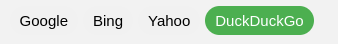
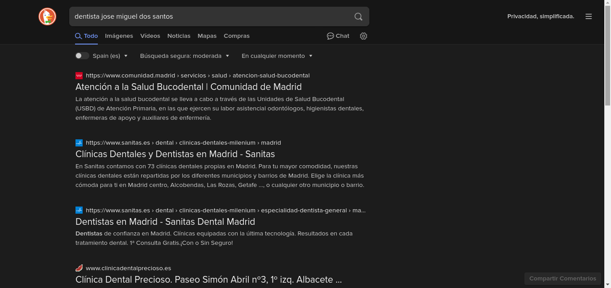
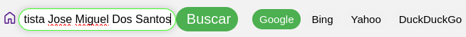
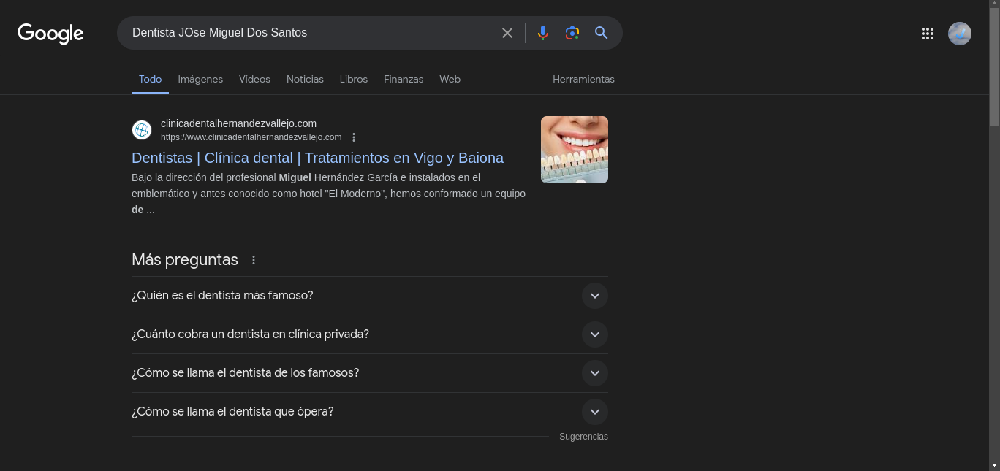
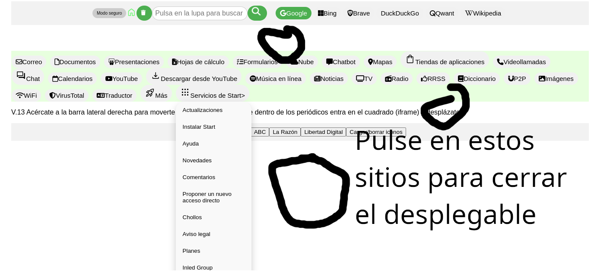

Desea buscar por ejemplo el dentista Jose Miguel Dos-Santos.
Escribe en el cuadro Buscar el término que introduciría en un navegador normal dentista Jose MIguel Dos-Santos
Selecciona el motor de búsqueda entre los disponibles junto al botónBuscar

Ha seleccionado el motor que protege su privacidad DuckDuckGo
Pulsa en el botón Buscar y se le abrirán los resultados de su búsqueda en DuckDuckGo
" height="215" width="456">
Beneficios de Start>
El resultado que ha obtenido en DuckDuckGo no le ha convencido, pues decide buscar en el buscador más reconocido: Google
Mantiene el término introducido en el cuadro de búsqueda pero en lugar de escoger DuckDuckGo escoge Google.

Ha pulsado el botón Buscar y ha obtenido un resultado de Google de forma rápida y concisa

Desplegables
Los desplegables no se pueden volver a plegar pulsando en el botón que los desplegó.
Ha de pulsar en otro desplegable para abrirlo y cerrar este inicial o pulsar fuera del desplegable.
Vea la imágen de ejemplo

Ahora se estará preguntando por qué... pues bien, si el ordenador que Ud. posee es lento y tarda en responder, Ud. habrá pulsado ya 2 veces cuando el desplegable se le haya abierto y acto seguido se le cerrará. Es una medida de experiencia de usuario.
No me aparece la barra de búsqueda
Desplácese un poco hacia abajo o pruebe a abrir un periódico
Al pulsar en Borrar iconos no se me borran todos
Es un error de diseño, se siente mucho
Listo para tener Start siempre a mano?
Fíjalo en tu navegador...¡el icono siempre se moverá si lo tienes en Marcadores!